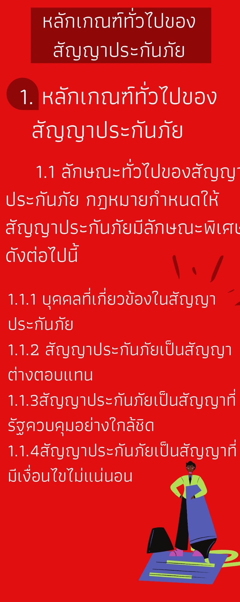
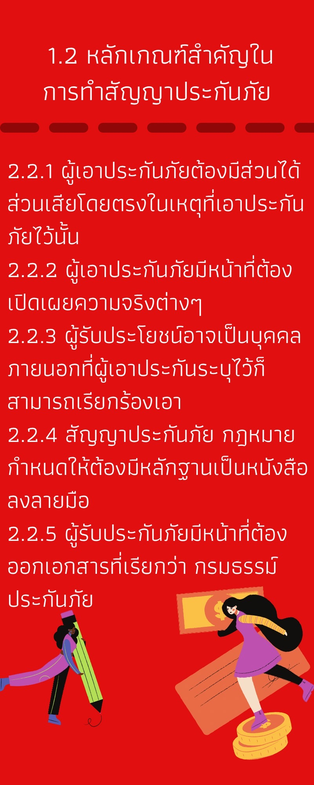
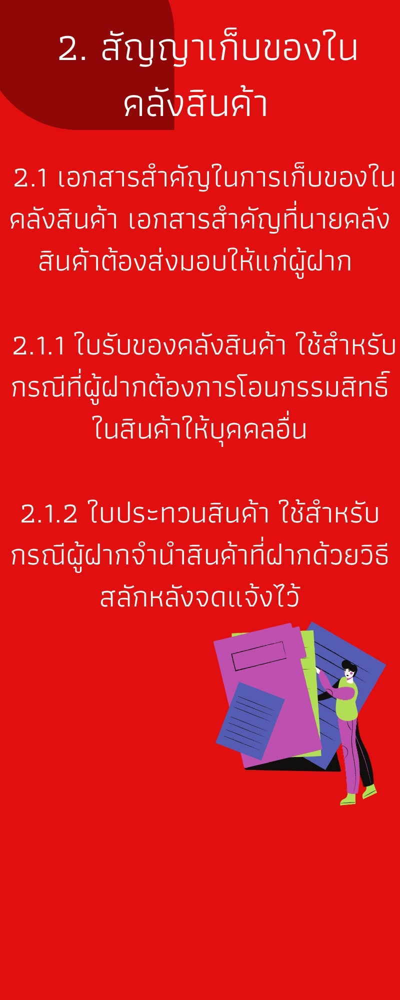
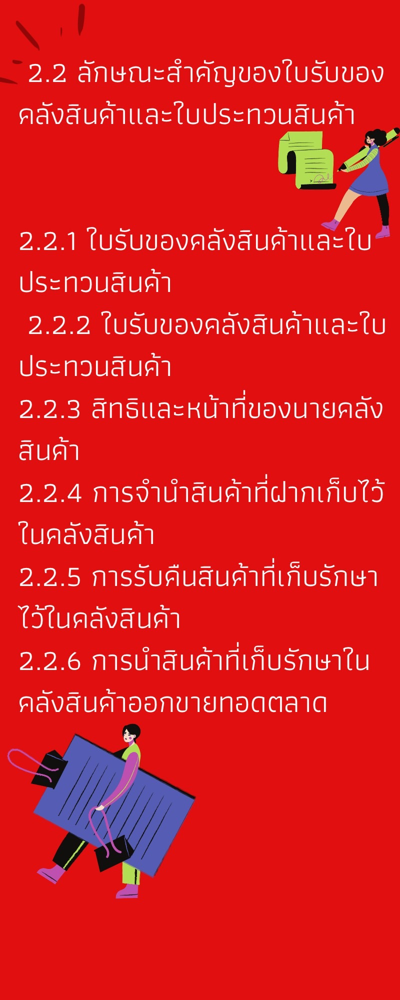

กฎหมายประกันภัยและเก็บของในคลังสินค้า
สัญญาประกันภัย
หมายถึงสัญญาที่บุคคลคนหนึ่งเรียกว่า ผู้รับประกันภัย ตกลงจะชดใช้ค่าสินไหม ทดแทนหรือใช้เงินจำนวนหนึ่งให้แก่บุคคลอีกคนหนึ่งเรียกว่า ผู้เอาประกันภัย เมื่อเกิดภัยพิบัติขึ้นตามที่ กำหนดไว้โดยผู้เอาประกันภัยตกลงว่าจะส่งเงินเบี้ยประกันภัยให้ตามข้อตกลงเช่นกัน
1.1 ลักษณะทั่วไปของสัญญาประกันภัย กฎหมายกำหนดให้สัญญาประกันภัยมีลักษณะพิเศษดังต่อไปนี้
1.1.1 บุคคลที่เกี่ยวข้องในสัญญาประกันภัย หมายถึงบุคคลต่อไปนี้
1) ผู้รับประกันภัย หมายถึงคู่สัญญาฝ่ายซึ่งตกลงจะใช้ค่าสินไหม หรือใช้เงินจำนวน หนึ่งให้ ถ้าเกิดภัยขึ้นตามข้อตกลง
2) ผู้เอาประกันภัย หมายถึงคู่สัญญาฝ่ายซึ่งตกลงจะส่งเงินค่าเบี้ยประกันภัยให้ตาม สัญญา
3) ผู้รับประโยชน์ หมายถึงบุคคลผู้จะพึงได้รับค่าสินไหมทดแทน หรือรับเงินที่ ผู้รับประกันภัยใช้ให้
4) ผู้เอาประกันและผู้รับประโยชน์นั้น จะเป็นบุคคลคนเดียวกันก็ได้
1.1.2 สัญญาประกันภัยเป็นสัญญาต่างตอบแทน หมายความว่าทั้งผู้รับประกันภัยและ ผู้เอาประกันภัยต่างอยู่ในสภาวะเป็นเจ้าหนี้และลูกหนี้ซึ่งกันและกัน กล่าวคือผู้รับประกันภัยอยู่ในฐานะเป็น เจ้าหนี้เพราะมีสิทธิเรียกร้องให้ผู้เอาประกันชำระเบี้ยประกันให้ตน และอยู่ในฐานะเป็นลูกหนี้เพราะมี หน้าที่ต้องชดใช้ค่าสินไหมหรือใช้เงินให้เมื่อเกิดภัยขึ้นตามสัญญา ขณะเดียวกันผู้เอาประกันภัยก็อยู่ใน ฐานะเป็นเจ้าหนี้เพราะมีสิทธิเรียกร้องค่าสินไหมหรือให้ใช้เงินแก่ตนเมื่อเกิดภัยขึ้นตามสัญญา และอยู่ใน ฐานะเป็นลูกหนี้เพราะมีหน้าที่ต้องจ่ายเงินเบี้ยประกันภัยเช่นกัน จึงเป็นสัญญาที่คู่สัญญาต่างได้รับประโยชน์ ทั้งสองฝ่าย
1.1.3 สัญญาประกันภัยเป็นสัญญาที่รัฐควบคุมอย่างใกล้ชิด ในกรณีต่อไปนี้
1) กิจการประกันภัยต้องจัดตั้งในรูปของบริษัทจำกัด หรือบริษัทมหาชนจำกัด และ ได้รับอนุญาตจากรัฐมนตรีว่าการกระทรวงพาณิชย์ โดยมติอนุมัติของคณะรัฐมนตรีเท่านั้น
2) ข้อความในสัญญาประกันภัยและจำนวนเงินเบี้ยประกันภัยที่เรียกเก็บต้องได้รับ ความเห็นชอบจากนายทะเบียนกรมการประกันภัยเสียก่อน บริษัทจะกำหนดขึ้นเองไม่ได้
1.1.4 สัญญาประกันภัยเป็นสัญญาที่มีเงื่อนไขไม่แน่นอน กล่าวคือไม่เป็นการแน่นอนว่าจะ เกิดความสูญเสียจากภัยที่กำหนดไว้หรือไม่ ดังนั้น ผู้เอาประกันแม้จะจ่ายเงินค่าเบี้ยประกันไปล่วงหน้าแล้ว อาจได้รับค่าสินไหมหรือเงินชดใช้ให้หรือไม่ก็ได้ ขณะที่ผู้รับประกันอาจต้องจ่ายค่าสินไหมหรือชดใช้เงิน หรือไม่ก็ได้เช่นกัน
1.2 หลักเกณฑ์สำคัญในการทำสัญญาประกันภัย ดังนี้ กฎหมายกำหนดหลักเกณฑ์อันเป็นสาระสำคัญของการทำสัญญาประกันภัยไว้
1.2.1 ผู้เอาประกันภัยต้องมีส่วนได้ส่วนเสียโดยตรงในเหตุที่เอาประกันภัยไว้นั้น
1.2.2 ผู้เอาประกันภัยมีหน้าที่ต้องเปิดเผยความจริงต่างๆ อันเป็นสาระสำคัญขณะทำสัญญา เนื่องจากความจริงเช่นว่านั้นอาจมีผลต่อการกำหนดจำนวนเงินเบี้ยประกันให้สูงขึ้นหรือต่ำลง หรืออาจ บอกปัดไม่ยอมทำสัญญาได้ หากผู้เอาประกันปกปิดไว้ย่อมมีผลให้สัญญาประกันภัยมีผลเป็นโมฆยะ
1.2.3 ผู้รับประโยชน์อาจเป็นบุคคลภายนอกที่ผู้เอาประกันระบุไว้ก็สามารถเรียกร้องเอา ค่าสินไหมหรือให้ชดใช้เงินได้ แม้จะมิใช่คู่สัญญาโดยตรงก็ตาม
1.2.4 สัญญาประกันภัย กฎหมายกำหนดให้ต้องมีหลักฐานเป็นหนังสือลงลายมือชื่อฝ่ายที่ ต้องรับผิด หรือลงลายมือชื่อตัวแทนของฝ่ายที่ต้องรับผิดไว้เป็นสำคัญ จึงจะบังคับกันได้
1.2.5 ผู้รับประกันภัยมีหน้าที่ต้องออกเอกสารที่เรียกว่า กรมธรรม์ประกันภัย ที่มีเนื้อความ ตรงตามสัญญาประกันภัยมอบไว้ให้แก่ผู้เอาประกันภัยฉบับหนึ่ง โดยต้องมีลายมือชื่อของผู้รับประกันภัย ลงไว้เป็นสำคัญ และต้องมีรายการดังต่อไปนี้
1) วัตถุที่เอาประกันภัย
2) ภัยซึ่งผู้รับประกันภัยตกลงคุ้มครอง
3) ราคาแห่งมูลประกันภัย หมายถึงมูลค่าของวัตถุที่เอาประกันภัย
4) จำนวนเงินซึ่งเอาประกันภัย
5) จำนวนเงินเบี้ยประกันภัยและวิธีส่งเบี้ยประกันภัย
6) ถ้าหากสัญญาประกันภัยมีกำหนดเวลา ต้องลงเวลาเริ่มต้นและเวลาสิ้นสุดไว้ด้วย
7) ชื่อหรือยี่ห้อของผู้รับประกันภัย8) ชื่อหรือยี่ห้อของผู้เอาประกันภัย furtuturan
9) ชื่อของผู้รับประโยชน์
10) วันทำสัญญาประกันภัย
11) สถานที่และวันที่ได้ทำกรมธรรม์ประกันภัย
1.3.5 เจ้าสำนักหรือเจ้าของโรงแรมมีสิทธิเอาทรัพย์สินหรือเครื่องเดินทางที่ยึดหน่วงไว้ออก ขายทอดตลาดเพื่อชาระหนี้อันค้างชำระแก่ตนได้ เมื่อเป็นไปตามหลักเกณฑ์ต่อไปนี้
1) ทรัพย์สินนั้นตกอยู่แก่ตนเป็นเวลานานถึงหกสัปดาห์แล้ว ยังไม่ได้รับหนี้สินที่ ค้างชำระ
2) ได้ประกาศโฆษณาแจ้งความจำนงจะขายทรัพย์สินนั้นในหนังสือพิมพ์ประจำ ท้องถิ่นฉบับหนึ่งแล้วอย่างน้อยหนึ่งเดือนก่อนวันขายทอดตลาด
3) เงินที่ได้จากการขายทอดตลาดภายหลังหักใช้หนี้สินแล้ว หากเหลือเท่าใดให้คนแก่ เจ้าของหรือฝากไว้ ณ สำนักงานฝากทรัพย์
2. สัญญาเก็บของในคลังสินค้า
สัญญาเก็บของในคลังสินค้า หมายถึงบุคคลคนหนึ่งเรียกว่า นายคลังสินค้า เป็นผู้กำหนดที่เก็บ รักษาสินค้าของบุคคลอื่นผู้นำมาฝากไว้เพื่อบำเหน็จเป็นการค้าปกติของ
2.1 เอกสารสําคัญในการเก็บของในคลังสินค้า เอกสารสำคัญที่นายคลังสินค้าต้องส่งมอบให้แก่ผู้ฝาก คือใบรับของคลังสินค้าและ ใบประทวนสินค้า อันเป็นเอกสารที่แสดงถึงรายละเอียดในการรับฝากสินค้าไว้กับตน
2.2 ลักษณะสำคัญของใบรับของคลังสินค้าและใบประทวนสินค้า กฎหมายได้กำหนดรายละเอียดของใบรับของคลังสินค้าและใบประทวนสินค้า ไว้ดังต่อไปนี้
2.3 สิทธิและหน้าที่ของนายคลังสินค้า กฎหมายได้กำหนดสิทธิและหน้าที่ของนายคลังสินค้าไว้ดังต่อไปนี้
2.4 การจำนำสินค้าที่ฝากเก็บไว้ในคลังสินค้า กฎหมายกำหนดให้ผู้ที่ฝากสินค้าเก็บไว้ในคลังสินค้า สามารถจำนำสินค้านั้นได้โดยไม่ต้อง คลื่อนย้ายออกจากคลังสินค้า โดยมีหลักเกณฑ์ดังต่อไปนี้
2.5 การรับคืนสินค้าที่เก็บรักษาไว้ในคลังสินค้า สินค้าที่ฝากเก็บไว้ในคลังสินค้า ผู้ฝากหรือผู้ทรงใบรับของคลังสินค้าซึ่งมีสิทธิรับคืนสินค้า ที่ฝากแทนผู้ฝากจะใช้สิทธิรับคืนได้ดังต่อไปนี้ คลังสินค้าเวนคืนใบรับของคลังสินค้าแก่นายคลังสินค้า
2.6 การนำสินค้าที่เก็บรักษาในคลังสินค้าออกขายทอดตลาด นายคลังสินค้าอาจนำสินค้าที่เก็บรักษาไว้ออกขายทอดตลาดได้



